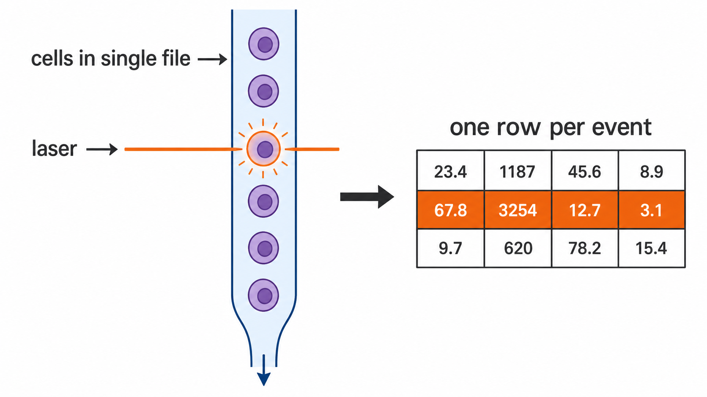
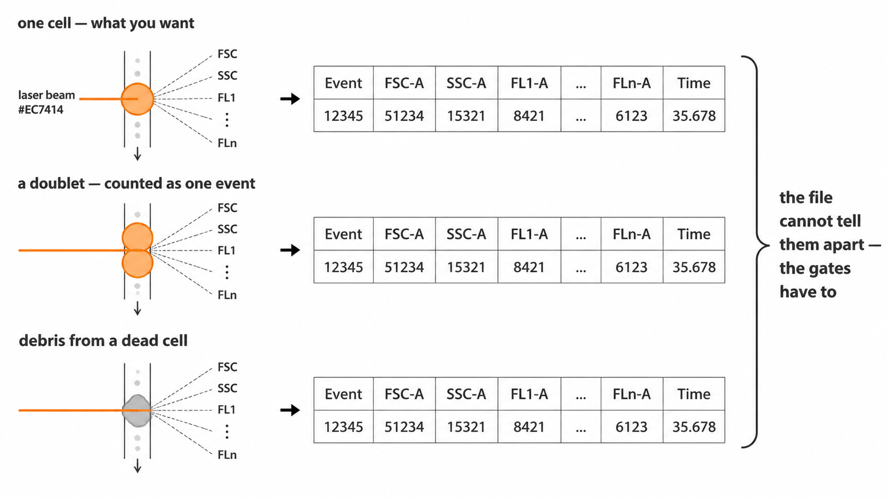
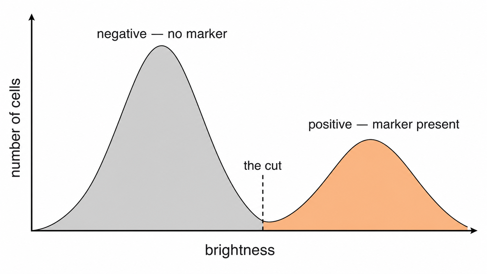
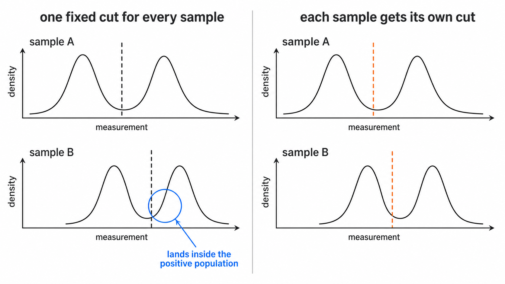
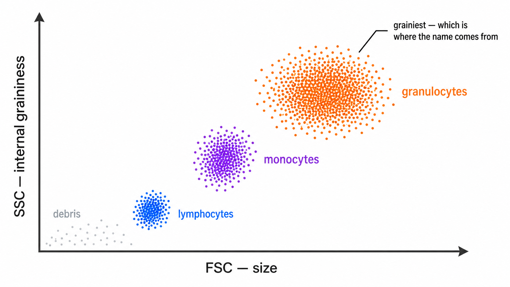
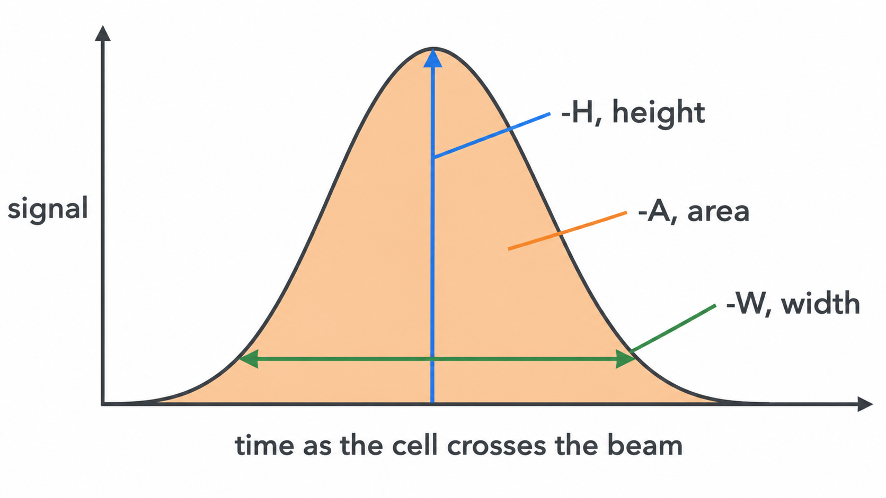
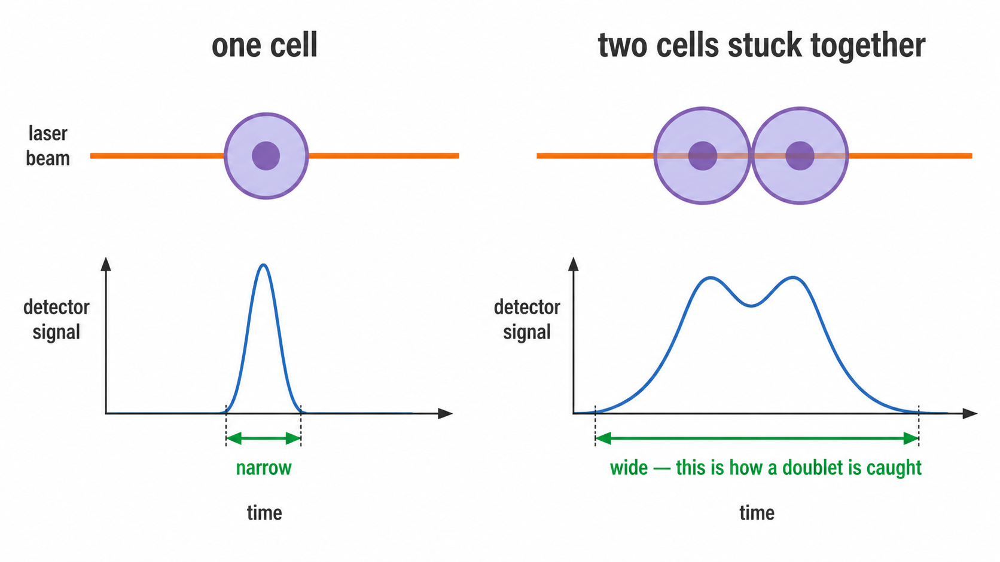
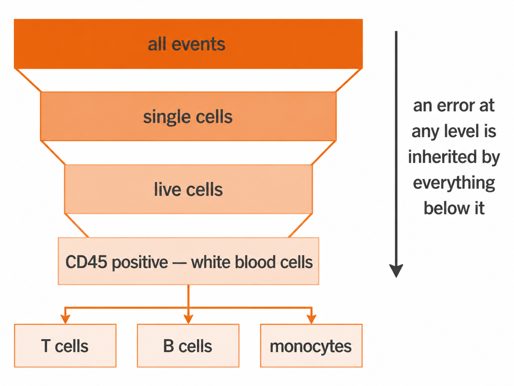

Flow cytometry for dummies
Source:vignettes/flow-cytometry-for-dummies.Rmd
flow-cytometry-for-dummies.RmdEvery other page here assumes you already know what a cut is, why
SSC-A sits in a population definition next to two
antibodies, and what the -A on the end of a channel name
means. This page assumes none of it.
Read it if you are about to write a populations: block
and the words above and below are doing more
work than you can follow.
1. One cell, one row
A cytometer does not look at your sample as a whole. It squeezes it into a stream so narrow the cells have to queue up single file, then fires a laser at the stream. Each cell crosses the beam alone, one at a time, thousands per second.

Every crossing is recorded as one row of numbers. That row is one cell. A typical file holds a few hundred thousand rows, and the whole analysis is sorting those rows into groups.
In cytometry the row is called an event rather than a cell, and the word is chosen carefully. An event is “something crossed the beam”. Usually that is one cell. It can also be two cells stuck together, or a fragment of a dead one. Part of the pipeline exists to throw those out, which is section 7.

2. Why cells glow
The numbers in each row come from two places, and it is worth keeping them apart in your head.
Some are physical. The cell blocks and scatters laser light whatever you do to it, so those measurements come free. That is section 5.
The rest come from staining. You add antibodies that stick only to one specific protein, each antibody carrying a fluorescent dye. A cell carrying that protein collects antibodies and glows; a cell without it does not. The protein is called a marker, and each marker gets its own channel of measurement.
So a row of numbers is one cell’s answer to “how big, how grainy, and how much of each of these proteins are you carrying”.
3. The cut
For each marker you get one number per cell: how brightly that cell glowed. Count how many cells sit at each brightness and you usually get two humps.

The left hump is cells without the marker, glowing faintly from background. The right hump is cells carrying it. The cut goes in the dip between them, because that is where the fewest cells are, so a small error in placing it misclassifies the fewest cells.
above means right of the cut. below
means left of it.
Written by hand these are CD15+ and CD15-,
said out loud as “CD15 positive” and “CD15 negative”.
Why the cut is not a number you type
This is the whole reason cyRAVEN exists, so it is worth a paragraph.
Stain two tubes on different days and both humps shift, because staining strength varies with the reagent lot, the incubation, the instrument settings and the sample itself. The dip shifts with them.

A cut copied from the first tube lands inside a hump in the second
and slices a real population in half. cyRAVEN finds the dip separately
in every sample, so the cut moves with the data. above
means “bright for this tube”, never “above 1500”. The values actually
used are written to thresholds_used.csv.
When no dip can be found, cyRAVEN does not invent one. It falls back
to a percentile, records that in thresholds_used.csv as
quantile_fallback, and draws the line in red in
gating_qc.png so you can see which cuts to distrust.
4. The three directions
| Direction | Meaning | Written by hand as |
|---|---|---|
above |
brighter than the cut, the marker is present | CD15+ |
below |
dimmer than the cut, the marker is absent | CD15- |
intermediate |
between the cut and a second, higher cut | CD14 dim, or mid |
All the markers listed for a population must hold at the same time.
intermediate needs two cuts
Some markers have three levels, not two. Monocytes are the standard
case: CD14 bright, CD14 mid, CD14 dim. One cut cannot split three
groups, so intermediate uses a second cut above the first,
and the cell has to sit between them.
That second cut has to be derivable from the data. If cyRAVEN cannot find a dip separating mid from bright, it does not guess. The population is marked unavailable with the reason attached, rather than reporting a number resting on an invented boundary.
5. A worked example
populations:
Granulocytes:
CD45: above # it is a white blood cell
SSC-A: above # it is grainy inside
CD15: above # it carries CD15Read as one sentence: count a cell as a granulocyte if it is above the CD45 cut and above the SSC-A cut and above the CD15 cut.
SSC-A is the odd one out, and explaining it is the rest
of this page.
6. FSC and SSC
These are the measurements that need no stain. They are laser light bouncing off the cell, so every cell has them whatever you stained for.
FSC, forward scatter, is light that carries on roughly straight ahead past the cell. Bigger cell, more light pushed forward. Read it as size.
SSC, side scatter, is light knocked off sideways at about 90 degrees. Smooth interiors deflect little. Interiors packed with granules and folded membranes deflect a lot. Read it as internal graininess.
Together they separate the main blood cell types before any antibody is involved:

That is why SSC-A: above sits in the granulocyte
definition next to two real antibodies. It is not a stain. It is the
physical fact that granulocytes are the grainiest white cells, which is
where the name comes from, so “grainy” is part of the definition rather
than a technicality.
7. The -A, -H and -W
suffixes
As a cell crosses the beam the signal climbs, peaks and falls. That trace is a pulse, and the instrument records three numbers from it.

Height is the peak, area is the
total underneath, width is the duration. The suffix on
a channel name says which one you are looking at, so FSC-A
is forward scatter area and FSC-H is forward scatter
height.
For a single cell, area and height rise and fall together. For two cells stuck in a clump the pulse lasts twice as long, so the area roughly doubles while the height barely changes. That mismatch is the only reliable way to spot a clump.

It matters more than it sounds. A clump of a T cell and a B cell stuck together is recorded as one event positive for both CD3 and CD19, which reads as a cell type that does not exist. Left in, clumps manufacture rare populations.
cyRAVEN takes the FSC-H to FSC-A ratio for every cell and keeps those within 3 MAD of that sample’s median. Events off that line are doublets and are dropped before anything is counted.
8. How cyRAVEN uses each channel
| Channel | Used for |
|---|---|
FSC-A |
Debris removal, at the dip in log10 FSC-A, below which events are too small to be whole cells |
FSC-H with FSC-A
|
The singlet gate in section 7 |
SSC-A |
A phenotype axis you can name in populations:, as in
the granulocyte example |
One deliberate exception. Scatter is excluded from the UMAP feature set. Scatter values span a far wider numeric range than stained markers, so leaving them in makes the map arrange cells mostly by size and graininess and drowns out the markers you actually stained for. Scatter decides what counts as a real single cell, then steps aside.
9. Declare the big populations first
Populations are not nested in the config file, but they share markers, and that is the trap.
Declare T cells as CD3: above, then subsets
like CD4 T cells as
CD3: above, CD4: above, CD8: below. Every subset re-uses
the CD3 cut. If that cut is misplaced it is not one wrong number. It is
wrong in the parent and in every subset beneath it, all shifted the same
way, and all still looking perfectly reasonable in the output table.

So score the broad lineage populations first and check they are plausible: granulocytes at roughly half of blood leukocytes rather than 4% or 95%. Once the lineage numbers make sense, the cuts feeding the subsets are trustworthy.
Checking a rare subset first tells you nothing, because at that size you cannot tell a real rare population from a parent cut that drifted.
Where to go next
- Gating specification: the full syntax, functional blocks, ratios and per-sample overrides.
- Diagnostics: the checks that tell you a cut went wrong, in the order to read them.
- Worked example: every figure from a real run, including the gating QC panels where you can see cuts sitting where they should.
- Explore mode: finding populations without declaring anything, for when you do not yet know what to write.